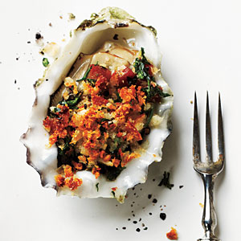

| Roasted Oysters | |
|---|---|
|  |
1. Preheat oven to 450°.
2. Combine nuts and bread in a mini food processor; process until coarsely ground. Heat a medium skillet over medium-high heat, and lightly coat pan with cooking spray. Add pancetta; sauté for 2 minutes or until crisp, stirring frequently. Remove from heat. Stir in pine nut mixture, parsley, and black pepper. Carefully arrange oysters in a single layer on a broiler pan, and spoon 1 tablespoon bread mixture onto each oyster. Bake at 450° for 5 minutes or until oysters are opaque. Serve immediately with lemon wedges. |